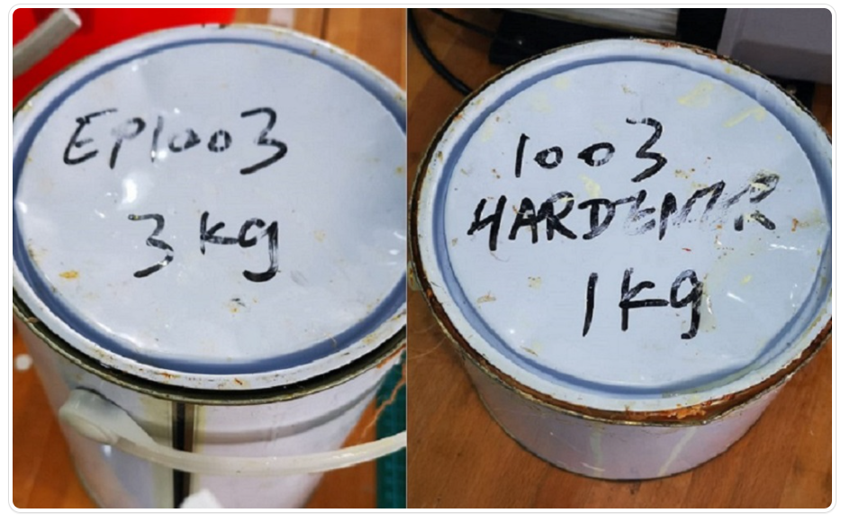

To make a mould design on fusion 360, let us watch this interesting video that shows you how.
For moulding and casting, i referred to Mr Yeo's Webpage Moulding and Casting on how to create the mould.
I used fusion 360 to do a 3d design of a inverted cut out of the Pentagon mould that has a 3-axis finish cut.
I started by creating a sketch of two pentagon, one above the other.
Afterwards, using the create > loft function, i created a transition shape between the two sketch profile which formed my 3d pentagon shape.
Next, i created a rectangular box that would encapsulate the pentagon mould, using modify > combine, i made a cutout of the mould on the rectangular box. Ensure that the base of the rectangle box is also the base of the pentagon as this allows the cutout of the rectangle box which has the mould design.
Create another rectangle that will contain the entire design, extrude the design, and save as a new body.
Now using modify > combine again, cut out the rectangle box with mould shape onto the larger rectangle box. This creates the mould structure of your pentagon mould.
With this mould structure created. We can change from Design > Manufacture, where we choose our settings and start to generate the g.code file required for milling using the Stepcraft machine.
After designing the mould, on the menu tab, go to manufacture. From here onwards, i used Mr yeo's setting for the milling process. Once setting for parameter is done, we can generate toolpath by selecting Actions > Generate.
Right click and select Post Process, click "All vendors" and select "WinCNC" in the listing, click "post" to generate the G-code.
With the g.code file ready, we will be using the Stepcraft machine to do out the milling of the mould design.
Before we begin with making our mould, we have to wear a pair of safety gloves and prepare a setup as shown below. In the set up, we need a vacuum pump and a container for the vacuuming process, we also need the easymould which comes in two different containers where we have to mix an equal amount of each component for the formation of mould.

Since my mould that i'll be doing is rather small, i mixed 5ml of component A with 5 ml of component B to create the mould mixture. Stir the mould mixture well to ensure homogeneity of both components, once the components are mixed, it has a shelf live of 15 minutes before the hardening process.
Next, using the vacuum pump, we use the vacuum system set up to degas the mixture, so that air trapped in the mixture are removed which will that cause tiny air pockets to form within the mould mixture itself.
Once ready, we can pour the mixture into our finished milling mould design. Leave the mould to cure for 24h in a dry and cool place.
And after curing, we have our mould structure ready!
Next, to prepare the actual mould, we use a mixture of Epicote 1003 resin and Epicote 1003 harderner in a ratio of 3:1. For me, since my mould design is rather small, i used 6ml:2ml.
Once the mixture is mixed throughly, let it degass under the vacuum system as shown previously to remove air bubbles, onces that is done, pour the mixture into the mould structure.
Once the mould is done curing in a cool and dry place for 24h, we have finally created our mould design of the pentagon!